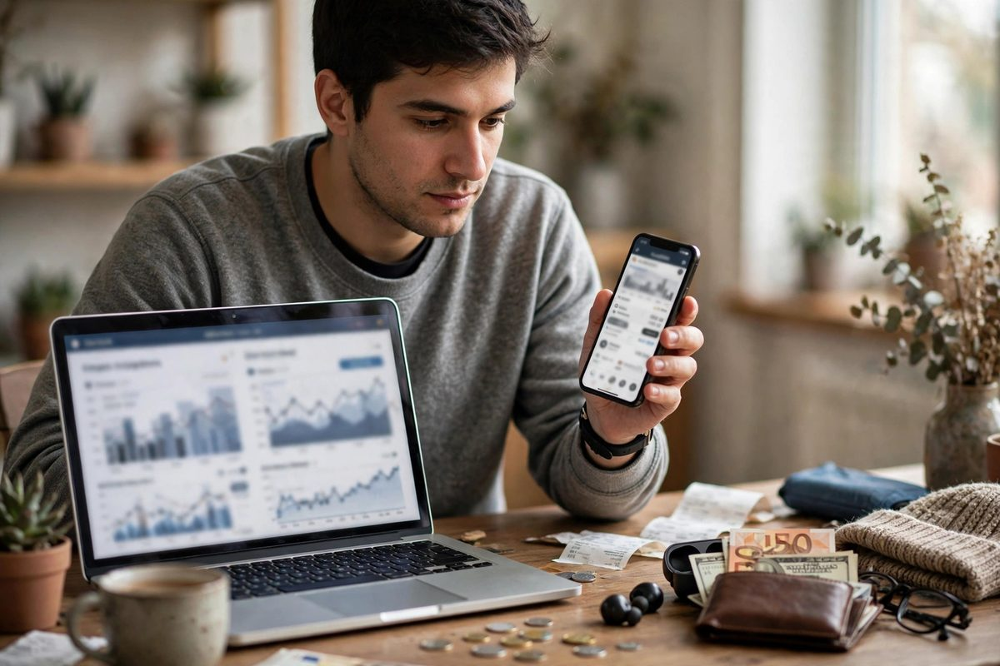

The Best Way to Convert Currency (and the Worst)

The cheapest options first
For most people, the cheapest way to convert currency is an online specialist transfer service or a multi-currency account, which typically charge a spread of under one percent plus a small transparent fee. These services exist because traditional banks add large margins to exchange rates, and competition has forced the specialists to be open about their pricing. For amounts over a few hundred dollars, the saving versus a bank can be tens or hundreds of dollars.
Using a debit or credit card abroad can also be cheap, provided the card charges no foreign transaction fee and you always choose to pay in the local currency. When a terminal offers to convert the payment into your home currency, that is dynamic currency conversion, and it almost always uses a poor rate. Declining it and letting your card network convert at near the mid-market rate is usually the better choice, and it costs nothing to do.
Where the money disappears
Banks are convenient but expensive for currency exchange, with total costs often reaching three to five percent once the spread and fees are combined. Airport and hotel exchange bureaus are the worst option of all, with spreads that can exceed ten percent, because they serve travellers who have no alternative. Street money changers in tourist areas can be worse still, and they carry the added risk of counterfeit notes and scams.
Cash itself is not free either. Withdrawing foreign cash from an ATM usually costs a one to three percent spread plus a fixed ATM fee, though it is still usually cheaper than an exchange bureau. Ordering foreign cash from your bank before travelling is convenient but rarely the cheapest, since the bank sets the rate. The pattern is consistent: convenience costs money, and the more desperate the location, the worse the rate.
A practical conversion plan
For a trip, use a fee-free card for most spending, withdraw a modest amount of local cash from an ATM on arrival, and keep a small amount of emergency cash in your home currency. For a large transfer, such as paying for a property or sending money home, compare at least three specialist services on the total amount the recipient receives, not on the headline rate. Check the rate on the day you transfer, because rates move, and consider a limit order if the service offers one and you can wait for a better rate.
Whatever the amount, always compare against the mid-market rate shown by our converter, and be suspicious of any provider that does not show its rate clearly. A provider that hides the rate is hiding the cost, and the cost is always paid by you.
Putting It Into Practice
Before your next conversion, spend ten minutes comparing three providers on the total amount received for your exact sum and currency pair, using our converter's mid-market rate as the benchmark. Write the three totals down, choose the best, and note how much you saved versus the worst. Do the same for your card: check whether it charges a foreign transaction fee, and if it does, consider a fee-free alternative before your next trip. Ten minutes of comparison is the highest-paid work most travellers will ever do.
Frequently Asked Questions
What is the cheapest way to convert currency?
Usually an online specialist transfer service or a multi-currency account, with a spread under one percent, or a fee-free card for spending abroad.
Should I exchange money at the airport?
No. Airport bureaus have some of the worst rates, often costing 10 percent or more. Use an ATM or a card instead.
Is it better to pay in local currency or my own currency abroad?
Pay in the local currency. Paying in your home currency uses dynamic currency conversion at a poor rate.